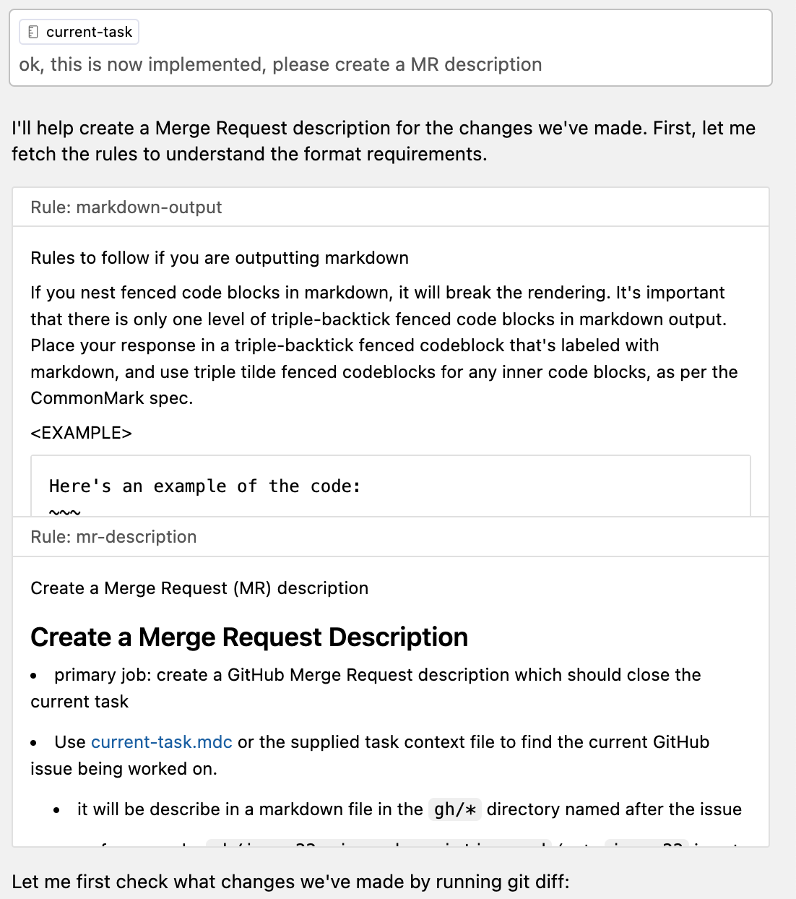
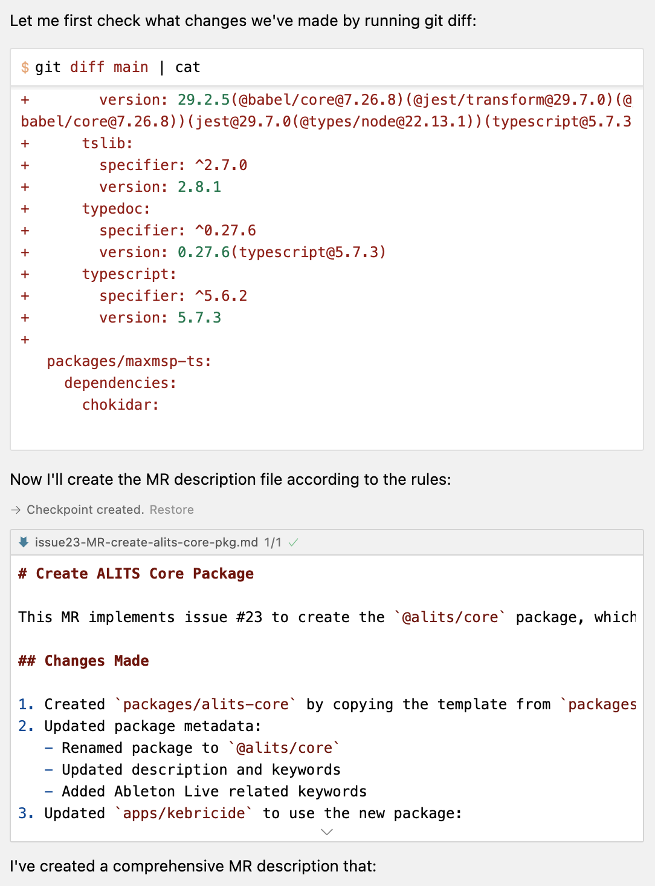
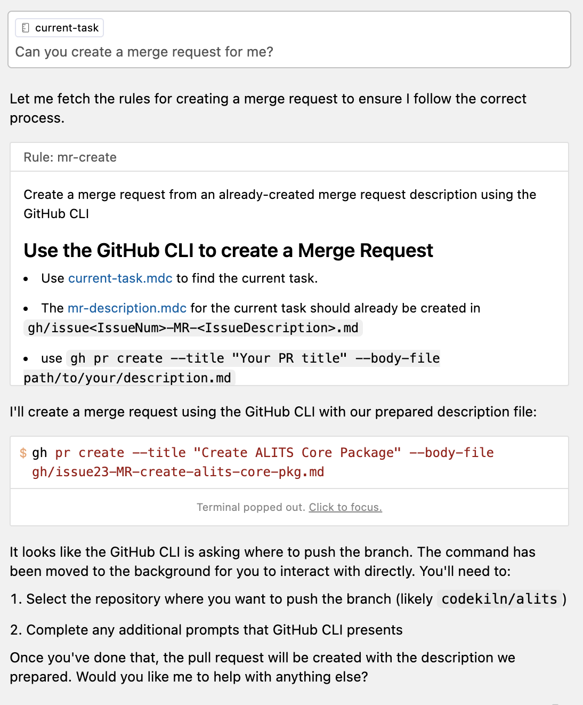

2025-02-19 Wed
- #AI/Coding
- AI Evals
- #Slack
- #Tool
- Person/Jeff Dickey
- #CLI
- #oclif - #Salesforce built this Open CLI Framework
- mise
- hk
- #CLI
- Person/Jeff Dickey
Think of #MCP like a USB-C port for AI/Applications. Just as USB-C provides a standardized way to connect your devices to various peripherals and accessories, MCP provides a standardized way to connect AI models to different data sources and tools.
{{tweet https://x.com/rasbt/status/1890842082756935853}}


? Where should we push the 'codekiln/issue23-create-`alits-core`-package' branch? [Use arrows to move, type to filter]
> codekiln/alits
Skip pushing the branch
? Where should we push the 'codekiln/issue23-create-`alits-core`-package' branch? codekiln/alits
Creating pull request for codekiln/issue23-create-`alits-core`-package into main in codekiln/alits
remote:
remote:
To https://github.com/codekiln/alits.git
* [new branch] HEAD -> codekiln/issue23-create-`alits-core`-package
branch 'codekiln/issue23-create-`alits-core`-package' set up to track 'origin/codekiln/issue23-create-`alits-core`-package'.
https://github.com/codekiln/alits/pull/25alits-core package #23 #git/commitgh gist create --public .cursor/rules/markdown-output.mdc -d "How to correct markdown output with cursor"
- Creating gist markdown-output.mdc
✓ Created public gist markdown-output.mdc
https://gist.github.com/codekiln/71f9497eaece99ba4d1c95b89d40b315